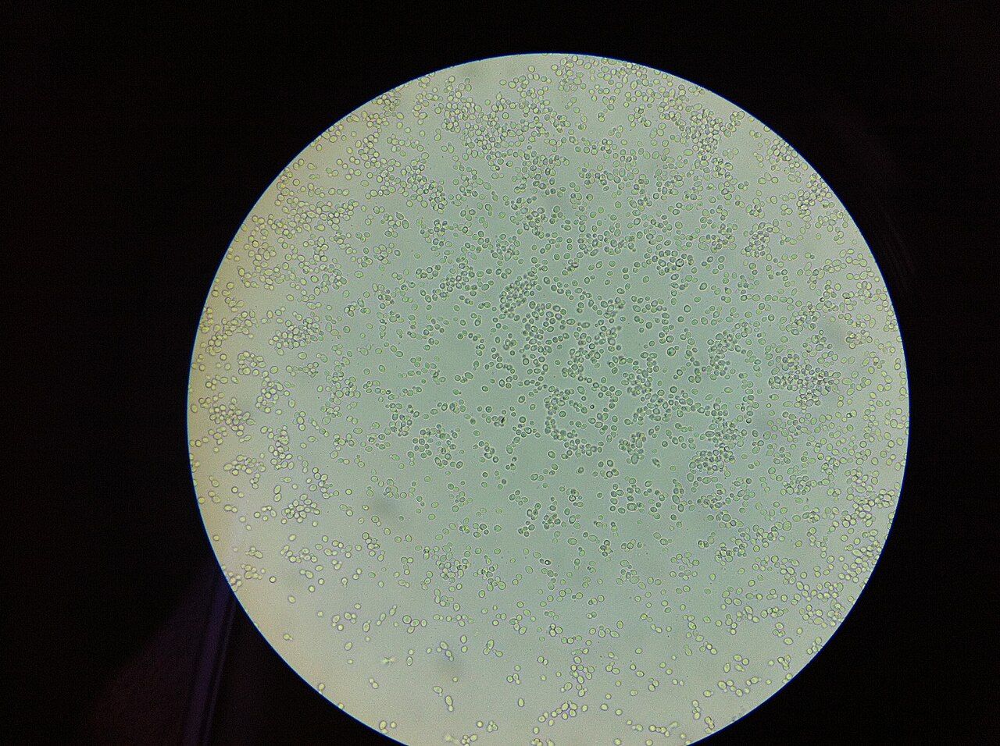

种群数量的变化
本期导读
“J”形 · “S”形 · K值 · 酵母菌计数

视频原话 · 导读3 句
- 同学们好！这节课梳理人教版选择性必修二第一章第二节——种群数量的变化。7.8s
- 高考常考“J”形和“S”形增长曲线、K值的含义与应用，以及培养液中酵母菌数量的探究。8.7s
- 我们按八个考点梳理，每个考点都讲清楚怎么考、怎么做。5.5s
建构数学模型01#
数学模型：用来描述一个系统或它的性质的数学形式
1观察研究对象，提出问题
2提出合理的假设
3用数学形式表达
4检验或修正
细菌每 20 min 分裂一次
假设：资源和空间无限
假设：资源和空间无限
Nn = 2n
公式：精确
曲线：直观
考法
步骤排序；“资源和空间无限”属于提出合理的假设，不是观察或检验
视频原话5 句
- 考点一，建构种群增长模型的方法。数学模型是用来描述一个系统或它的性质的数学形式。9.0s
- 建构步骤：观察研究对象，提出问题，提出合理的假设，用数学形式表达，再检验或修正。9.0s
- 比如，细菌每 20 分钟分裂一次，在资源和空间无限的条件下，n 代后的数量是 2 的 n 次方。9.5s
- 数学公式精确，曲线图直观，两种形式各有优点。5.3s
- 考法：给出建模的几个步骤让你排序，或者问“资源和空间无限”属于哪一步——它属于提出合理的假设。9.3s
“J”形增长02#
理想条件：食物和空间充裕、气候适宜、没有天敌和其他竞争物种
Nt = N0λt
N0：初始数量 t：时间（年） Nt：t 年后的数量
λ：该种群数量是前一年种群数量的倍数
λ > 1 且保持不变 → “J”形
λ > 1 且保持不变 → “J”形
易错
增长率 = λ − 1，保持不变；增长速率（单位时间增加的个体数）越来越大
视频原话4 句
- 考点二，“J”形增长。条件是食物和空间条件充裕、气候适宜、没有天敌和其他竞争物种等理想条件。10.4s
- 种群的数量每年以一定的倍数增长，第 t 年的数量 = 初始数量 × λ 的 t 次方。8.0s
- λ 表示该种群数量是前一年种群数量的倍数。λ 大于 1 且保持不变，曲线就呈“J”形。9.5s
- 易错：增长率 = λ − 1，“J”形增长的增长率保持不变；但增长速率，也就是单位时间增加的个体数，越来越大。11.4s
“S”形增长与K值03#
环境阻力
资源和空间有限
- 密度增大
- →种内竞争加剧、天敌增多
- 出生率↓ 死亡率↑
- →出生率 = 死亡率
- →稳定
K值（环境容纳量）：一定的环境条件所能维持的种群最大数量
易错
K值随环境改变：环境破坏 K↓，环境改善 K↑；达到K值后在K值附近上下波动
视频原话5 句
- 考点三，“S”形增长。自然界的资源和空间总是有限的。6.0s
- 种群密度增大，种内竞争加剧，天敌数量也会增加，于是出生率降低、死亡率升高。8.4s
- 当出生率等于死亡率时，种群停止增长，数量稳定在一定水平，曲线呈“S”形。7.6s
- 一定的环境条件所能维持的种群最大数量，叫做环境容纳量，又称K值。7.1s
- 易错：K值不是固定不变的。环境遭到破坏，K值下降；环境改善，K值上升。种群数量达到K值后，会在K值附近上下波动。13.2s
增长速率曲线04#
解题方法
增长速率最高点 ↔ K/2，降到零 ↔ K值；增长速率最大时，数量并不最多
视频原话4 句
- 考点四，增长速率曲线。“S”形增长中，增长速率先增大、后减小。7.5s
- 种群数量为 K/2 时，增长速率最大。4.3s
- 种群数量达到 K值 时，增长速率为零。4.4s
- 解题方法：增长速率曲线的最高点对应 K/2，降到零的点对应 K 值。不要把增长速率最大的时刻当成数量最多的时刻。12.9s
K值的应用05#
| 应用 | 做法 | 原理 |
|---|---|---|
| 渔业捕捞 | 捕捞后剩余量维持在 K/2 左右 | K/2 时增长速率最快，可持续高产 |
| 灭鼠等防治 | 硬化地面、储粮、养殖天敌，降低K值；在 K/2 前及早防治 | 从根本上控制数量 |
| 保护濒危动物 | 建立自然保护区，提高K值 | 改善栖息环境 |
防治越早越好：数量越接近 K/2，增长越快，越难控制
易错
是捕捞后剩余 K/2，不是数量到 K/2 就开始捕；灭鼠关键是降低K值，不是把数量控制在 K/2
视频原话6 句
- 考点五，K值与K/2的应用。先看渔业捕捞。5.6s
- 捕捞后，让剩余量维持在 K/2 左右，种群增长速率最快，可以持续获得较大的捕捞量。8.6s
- 再看有害生物防治，比如灭鼠：硬化地面、储藏好粮食、养殖天敌，降低K值，从根本上控制鼠害。10.0s
- 防治要越早越好，在种群数量达到 K/2 之前进行。5.5s
- 保护濒危动物，要建立自然保护区，改善栖息环境，提高K值。6.3s
- 易错：是捕捞后剩余 K/2，不是数量达到 K/2 就开始捕；灭鼠的关键是降低K值，而不是把数量控制在 K/2。11.3s
波动和下降06#
波动：大多数种群的常态，有的呈周期性波动
大量增长：东亚飞蝗爆发、赤潮中藻类激增
下降甚至灭亡：长期处于不利条件，如乱捕滥杀、栖息地破坏
考法
种群数量变化包括增长、波动和下降；达到K值后不是一条直线，而是在K值附近波动
视频原话4 句
- 考点六，种群数量的波动和下降。在自然界，大多数种群的数量总是在波动中。8.2s
- 有些种群会出现周期性波动，有些则会在短时间内大量增长，比如东亚飞蝗的爆发、赤潮中藻类的激增。9.9s
- 当种群长久处于不利条件下，比如遭遇人类乱捕滥杀和栖息地破坏，种群数量会持续下降，甚至灭亡。10.1s
- 考法：种群数量的变化包括增长、波动和下降。“S”形增长达到K值后并不是一条直线，而是在K值附近波动。11.0s
酵母菌数量探究07#
1先盖盖玻片
2培养液滴在盖玻片边缘，自行渗入
3吸去多余培养液
4吸取前振荡试管，摇匀
5稍待片刻，菌体沉降后计数
每毫升菌数 = 计数室中的菌数 × 104 × 稀释倍数
计数室体积 0.1 mm3，1 mL = 1000 mm3
易错
先盖后滴；菌体过多要稀释；不需另设对照（前后自身对照），但要重复实验取平均值
视频原话5 句
- 考点七，探究培养液中酵母菌种群数量的变化。用血细胞计数板在显微镜下计数。8.6s
- 操作顺序：先盖盖玻片，再把培养液滴在盖玻片边缘，让它自行渗入，吸去多余的培养液。9.0s
- 从试管中吸取培养液前要振荡，使酵母菌分布均匀；稍等片刻，待酵母菌沉降到计数室底部再计数。9.8s
- 计数室体积为 1 mm × 1 mm × 0.1 mm，每毫升酵母菌数 = 计数室中的菌数 × 10000 × 稀释倍数。13.4s
- 易错：顺序不能反；菌体过多要稀释；本实验不需要另设对照，前后自身对照，但要重复实验取平均值。10.4s
λ曲线的判读08#
λ > 1：增加
λ = 1：不变
λ < 1：减少
最多：λ 由 >1 降到 1
最少：λ 由 <1 升到 1
最少：λ 由 <1 升到 1
解题方法
看 λ 和 1 比大小，不看 λ 升还是降
视频原话5 句
- 考点八，λ 曲线的判读。高考常给出 λ 随时间变化的曲线。7.1s
- λ > 1，种群数量增加；λ = 1，数量不变；λ < 1，数量减少。8.5s
- 所以，λ 虽然在下降，但只要仍大于 1，种群数量就仍在增加。6.7s
- 数量最多：λ 从大于 1 降到等于 1 的时刻；数量最少：λ 从小于 1 回升到等于 1 的时刻。10.7s
- 解题方法：看 λ 和 1 比大小，不看 λ 升还是降。5.6s
易错速查✓
先自己判断，再点按钮查看对错与解析。
- 1“J”形增长的种群，增长率保持不变说法正确。
- 2种群数量达到K值后就不再变化说法错误：在K值附近上下波动
- 3环境条件改变，K值不会改变说法错误：K值随环境条件改变而改变
- 4捕捞后种群数量应维持在K/2左右说法正确。
- 5计数时先滴培养液，再盖盖玻片说法错误：先盖盖玻片，再滴培养液
- 6λ下降时，种群数量一定减少说法错误：λ仍大于1时，数量仍在增加
K/2增长最快，λ和1比大小！
视频原话 · 易错速查5 句
- 最后，用六道判断题检验一下。3.6s
- 判断一：“J”形增长的种群，增长率保持不变？对。判断二：种群数量达到K值后就不再变化？错，在K值附近波动。12.9s
- 判断三：环境条件改变，K值不会改变？错。判断四：捕捞后种群数量应维持在 K/2 左右？对。11.6s
- 判断五：计数时先滴培养液，再盖盖玻片？错，先盖后滴。判断六：λ 下降时，种群数量一定减少？错。12.5s
- 八个考点串成一条线：K/2 增长最快，λ 和 1 比大小。我们下期再见！8.1s
图片来源
图片来源：Wikimedia Commons —— Ajay Kumar Chaurasiya《Yeast cells in wet mount of culture》CC BY-SA 4.0
Photo: Ajay Kumar Chaurasiya, CC BY-SA 4.0